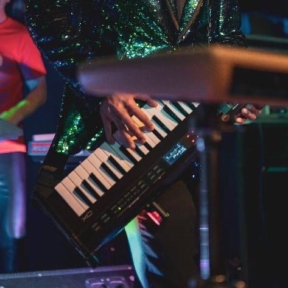

A few months after I moved from Missouri to Florida in 2021, I received an interesting message: Arcade Sounds, the biggest band in the Panama City Beach area, was looking for a keyboardist and asked me to try out.
Out of my passion for synthesizers and a desire to challenge myself with a new experience as a keyboardist, I joined the band and played with them for about a year.
Our shows had me firing on all cylinders. For the first time in my career, I was performing with two main keyboards, a keytar synthesizer, and a melodica. On some songs, I’d have to play two of these instruments at the same time. On others, I’d use all four boards within the same song. Throughout all of this, I was often singing backup vocals and occasionally singing lead. To keep our sets flowing, I had to develop an organized approach to crafting and storing sounds on each keyboard, and I mastered the art of switching through multi-layered sounds on three different boards and updating the transposition settings on each, all in the span of a few seconds. We played 3-4 hour gigs and performed on Fridays and Saturdays, 2-3 weekends a month.
These are some of the projects I’ve worked on and some of the ways I’ve performed and produced music.
Feel free to reach out if you have any questions, or if you’d like to collaborate.